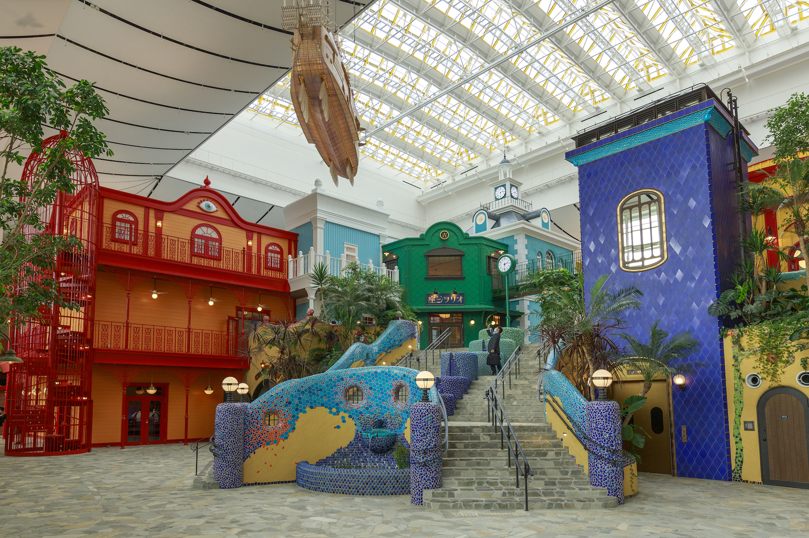
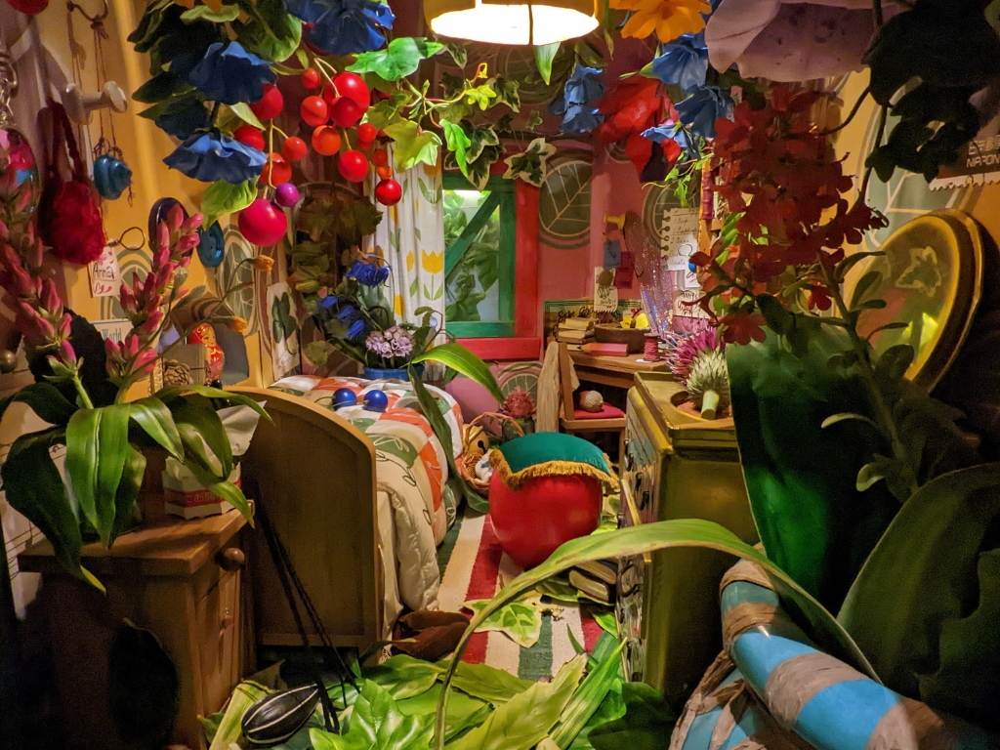
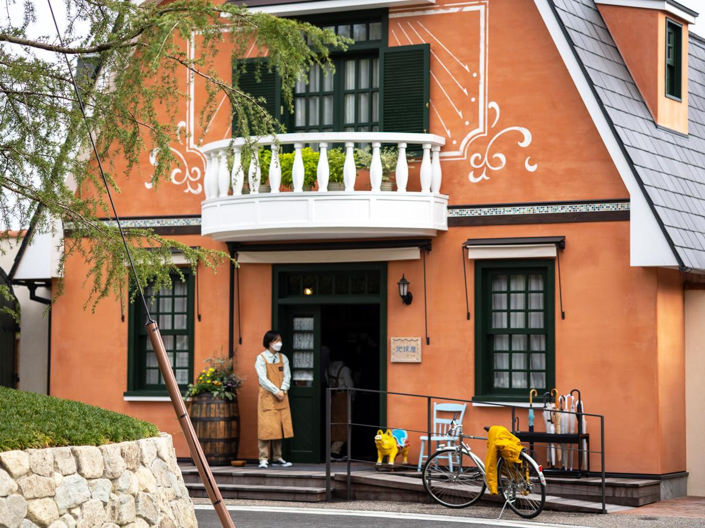
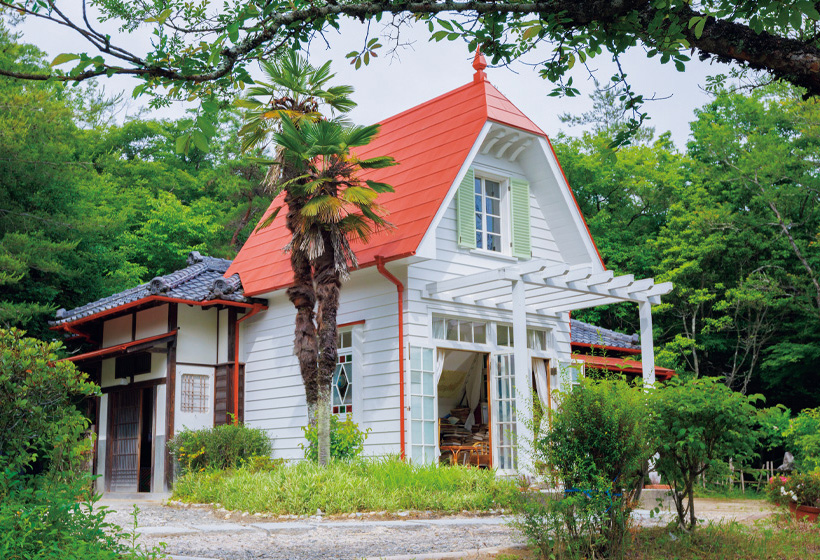
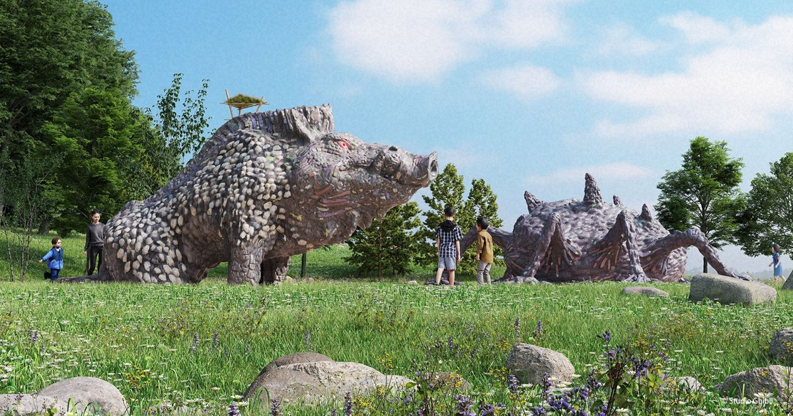

Parque Ghibli
O Parque Ghibli é um parque que representa o mundo do Studio Ghibli.
Em consulta com a floresta circundante, está sendo construído dentro do recinto do Parque Comemorativo de Aichi (Parque Moricoro).
Não há grandes atrações ou brinquedos.
Dê uma caminhada, sinta a brisa e descubra as maravilhas.
O Grande Armazém Ghibli é uma instalação interna que armazena todos os segredos do estúdio, de grandes a pequenos artefatos e exposições de filmes anteriores do Studio Ghibli. Você encontrará desde exposições cheias de fantasia, como Guarda Robô (Castelo no Céu), CatBus (Meu Amigo Totoro) e exposições de estúdios de cinema para crianças, até materiais e recursos que revelam os segredos dos filmes do Studio Ghibli.
No Morro da Juventude fica o World Emporium, a loja de antiguidades de Sussurros do Coração.
Na Floresta Dondoko, "Dondoko-do" espera por você no topo da colina da floresta, atrás da Casa de Satsuki e Mei.
A segunda fase da abertura do Parque Ghibli começa com a Vila Mononoke em 1º de novembro de 2023, seguida pelo Vale das Bruxas em 16 de março de 2024.
O Grande Armazém Ghibli é uma exibição espetacular de tudo que é Ghibli. Da sala de projeção às três exposições especiais, às lojas e ao café.
Nestas exposições interativas, torne-se seu personagem favorito do Studio Ghibli enquanto se encontra em um mundo de cenas de filmes famosos. São 14 cenas de 13 filmes. Em A Viagem de Chihiro, suba a bordo do misterioso trem marítimo e torne-se Chihiro sentado ao lado de Sem-Rosto.
Como é o mundo para as pessoinhas de Arrietty? No momento em que você descobrir que tropeçou na Casa de Baixo e no Jardim dos Pequeninos, sua perspectiva também mudará.
Na área de recreação que reproduz o mundo de Meu Amigo Totoro, um CatBus único o aguarda. Quando quiser descansar, entre na árvore que se eleva até o teto. O que há la dentro... ?
Esta área apresenta o World Emporium, um dos locais de Sussurros do Coração, o Cat Bureau de O Mundo dos Gatos e a Elevator Tower aberta ao público em geral.
World Emporium é a loja de reparo e revenda de antiguidades que Shizuku Tsukishima encontra em Sussurros do Coração. Móveis antigos, relógios de cuco, bonecas, cavalos de madeira e muito mais estão em exposição quando você entra no 1º andar. O 2º andar é o escritório onde Seiji Amasawa estava aprendendo a construir violinos.
Seja transportado para o mundo de Meu Amigo Totoro na Casa de Satsuki e Mei. No topo da colina atrás da casa delas, fica Dondoko-do. Somente crianças são permitidas dentro de Dondoko-do!
Esta é a casa de estilo nipo-ocidental para onde Satsuki e Mei se mudaram em Meu Amigo Totoro. Há uma cozinha, banheiro, sala de estar, quarto, escritório e muito mais. Dentro da casa deles você quase pode ouvir as risadas de Satsuki e Mei e os ecos dos espíritos de poeira.
Depois de seguir as bolotas ao longo da trilha da colina, Dondoko-do te espera. Dondoko-do é uma estrutura de madeira de 5 metros de altura onde crianças de até doze anos podem brincar.
Esta área é inspirada na paisagem da vila montanhosa japonesa em Princesa Mononoke. Apresenta o centro de aprendizagem interativo Tatara-ba, escorregador do Lord Okkoto e estátua do Demon Spirit.
Tatara-ba é um centro de aprendizagem projetado para se parecer com uma construção do filme. A grama cresce no telhado. Como primeira experiência interativa em Tatara-ba, você pode experimentar preparar uma especialidade local chamada Gohei-mochi (bolinhos de arroz) em uma grelha a carvão.
Aqui é onde as bruxas do mundo Ghibli se reúnem. Junte-se a elas e aprecie o ambiente europeu.
As atrações nesta área incluem:
・Residência Okino e Padaria Guchokipanya de Serviço de Entregas da Kiki
・Castelo do Howl e Chapelaria Hatter de Castelo Animado
・A Casa das Bruxas de Aya e a Bruxa
Há também um restaurante e uma área de entretenimento familiar.
Inauguração em 16 de março de 2024